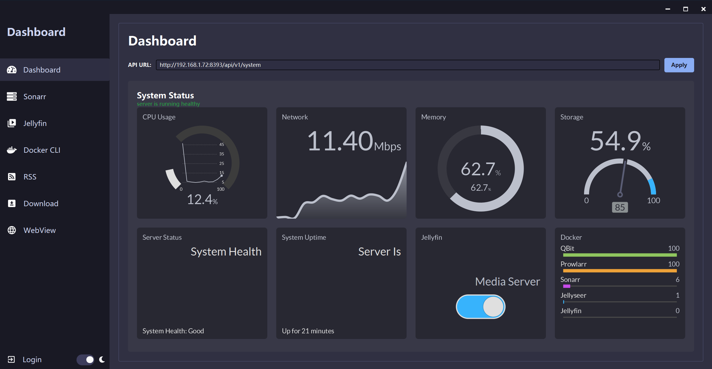
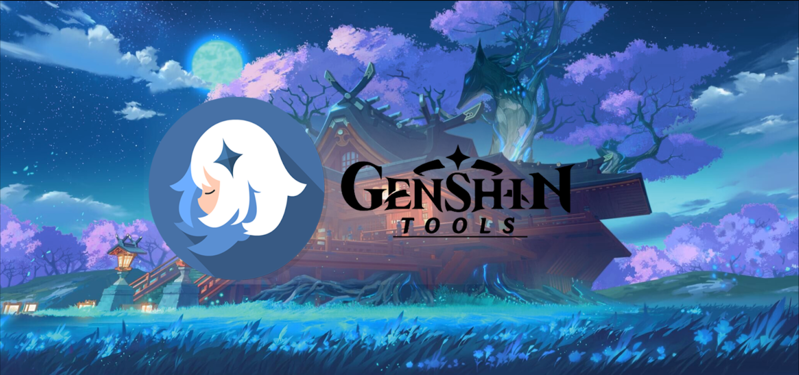

I move comfortably between the code and the infrastructure underneath it — from Java/Spring Boot backends to Active Directory, Docker, and the network that keeps it all breathing.
$
bowen-zhao — hybrid dev/ops profile
$
12+ months, 0 data loss
$
Java · Spring Boot · Docker · Active Directory · Linux
▌I'm a hybrid IT profile — half backend developer, half sysadmin — trained through Spain's vocational track: SMR → ASIR → DAM. That progression means I've spent as much time inside Active Directory and PowerShell as I have inside Spring Boot and REST APIs, and I genuinely enjoy both sides.
My homelab is where that hybrid identity actually lives: a Linux server running a *arr automation stack, Docker containers, Tailscale VPN, and an Oracle Cloud instance, all monitored through a JavaFX dashboard I built myself. It's been running 12+ months without losing data — which is basically my resume in one sentence.
Native in Mandarin and Cantonese, professional in Spanish and English — I've used that directly to support international users, including remote English-language IT support for teams in the Netherlands.
Currently deep in an active job search across IT support, sysadmin, and junior backend roles — direct and honest in how I present my experience, no inflated titles.
Real services I run and maintain, day to day — not a demo.
Media automation stack
Self-hosted media server
Download client, containerized
Remote mesh access, any network
Ubuntu, 24GB RAM — Syncplay server
PoE camera bridge + motionEye
6+ containerized services in production
Automated via Bash — 0 data loss, 12+ months
OOP, database design, web/mobile development and software engineering in Java, C#, JavaScript and Android. TFG: a JavaFX + Spring Boot dashboard monitoring Docker containers via WebSocket.
Windows/Linux server administration, Active Directory, TCP/IP, VLANs, VPNs, firewalls, PowerShell scripting, virtualization and IT infrastructure management.
Hardware assembly and repair, OS installation and configuration, basic networking, and end-user technical support.
Mandarin & Cantonese — mother tongue
Fluent in speaking, reading and writing
Verified by official test, July 2026 — used daily for remote international IT support

Cross-platform JavaFX client that drives MPV over IPC to keep video playback in sync across users. Integrates Jellyfin session reporting and AniList progress tracking, with CI/CD across Windows/Linux/macOS.
PySide6 desktop app for real-time manga OCR and translation via a local LLM through Ollama, with a dual-strategy bubble detector and a debug window for tuning the pipeline.
Full-stack reader (Go backend, React frontend) with SQLite, AniList OAuth2, a concurrent CBZ downloader, and a scraper handling Cloudflare and custom chapter decryption.
Chrome extension linking external sources to AniList anime, manga, or novel pages, with local storage and easy retrieval.

A collection of Svelte-built tools for Genshin Impact, including wish history tracking and other game-related utilities.
San Juan, Alicante, España
Open to relocation for the right role